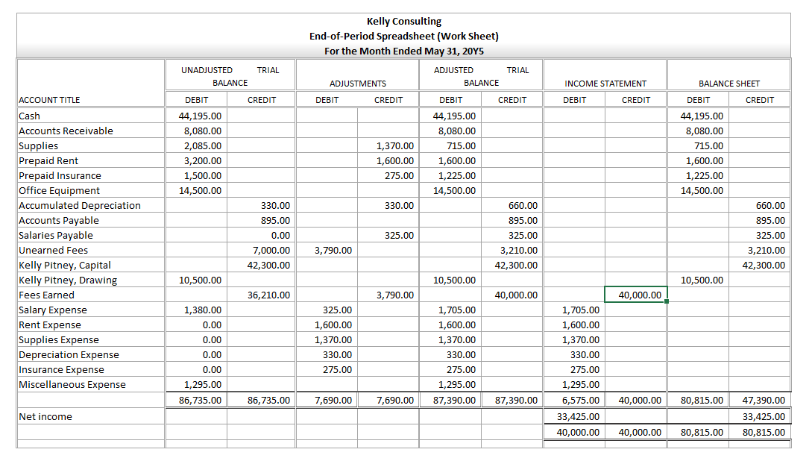

ACCOUNTING · MICROSOFT EXCEL
Accounting for a Service Business
Kelly Consulting
An Excel-based accounting project demonstrating general ledger posting, adjusting entries, trial balance preparation, and end-of-period financial reporting for a service business.
View project →